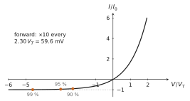
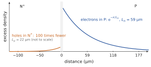
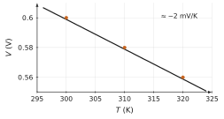
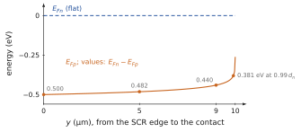
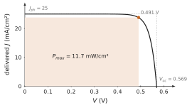

The applied voltage drops across the SCR; low injection and quasi-equilibrium; quasi-Fermi levels, n=nie(EFn−Ei)/kT, p=nie(Ei−EFp)/kT; the edge densities np(xp)=np0eV/VT, pn(xn)=pn0eV/VT; diffusion in the neutral regions; the Shockley law J=J0(eV/VT−1) with J0=qni2(NAdpDn+NDdnDp) for short regions and d→L for long regions; who carries the current; the solar cell and the LED.
Data
Silicon at 300 K, ni=1010cm−3, VT=25.9 mV, Dn=35, Dp=12 cm²/s unless the problem gives other values. Reference diode (long): NA=1018, ND=1016cm−3, τn=0.1 µs, τp=10 µs, Ln=18.7 µm, Lp=110 µm, J0=2.1×10−12 A/cm². Short example of the course (Section 6.11): same doping and lifetimes, dp=2 µm, dn=10 µm, J0=2.2×10−11 A/cm². Low injection unless stated otherwise.
Problem 6.1Reading the characteristicA · Understanding
Adapted from Neamen, Problems 8.1 and 8.9, pp. 323–324, and Sze & Lee, Ch. 3, Problem 10, p. 121
An ideal diode follows I=I0(eV/VT−1) at 300 K.
In forward bias (V≫VT), by how much must V increase to multiply the current by 10? By 100?
At what reverse voltage does the reverse current reach 90 % of I0? 95 %? 99 %?
Explain physically, with the minority densities at the edges of the SCR, why the reverse current saturates after a few VT, whatever the reverse voltage.
(a) I2/I1=eΔV/VT, so ΔV=VTln(I2/I1): 25.9ln10=59.6 mV per decade, 119 mV for two decades.
(b) −I/I0=1−eV/VT=0.9 gives eV/VT=0.1, V=VTln0.1=−59.6 mV. For 95 %, V=VTln0.05=−77.6 mV; for 99 %, −119 mV.
(c) In reverse bias the edge densities are pn0eV/VT and np0eV/VT: after a few VT they are practically zero. The gradient of the minority density across a neutral region then goes from its equilibrium value at the contact to zero at the edge, and no longer changes: the reverse current is the diffusion of the few minority carriers towards the SCR, which sweeps them across. A larger reverse voltage cannot extract carriers that are not there.

The ideal characteristic in reduced units: saturation in reverse bias after a few VT, a decade every 59.6 mV in forward bias.
Problem 6.2Minority densities at the edgesB · Guided calculation
Adapted from Neamen, Problem 8.2, p. 324
A silicon junction has ND=2×1015 and NA=8×1015cm−3.
Compute the equilibrium minority densities np0 and pn0.
Compute the minority densities at the edges of the SCR for V=0.45 V, 0.55 V and −0.55 V.
At 0.55 V, compare pn(xn) with ND. Is low injection still satisfied?
Check that at each edge np=ni2eV/VT. What is the separation EFn−EFp there?
Show the short answer
(a) np0=1.25×104, pn0=5×104cm−3; (b) 0.45 V: 4.4×1011 and 1.8×1012; 0.55 V: 2.1×1013 and 8.3×1013; −0.55 V: 7×10−6 and 3×10−5cm−3; (c) 4 % of ND: yes; (d) qV.
(b) eV/VT=3.5×107 at 0.45 V, 1.67×109 at 0.55 V, 6×10−10 at −0.55 V. Hence np(xp)=4.4×1011, 2.1×1013 and 7.5×10−6cm−3; pn(xn)=1.8×1012, 8.3×1013 and 3.0×10−5cm−3.
(c) 8.3×1013/2×1015=4 %: the majority density is barely changed, low injection holds. It fails first on the lightly doped side, where pn0 is largest.
(d) At xn: n≃ND and p=pn0eV/VT, so np=NDpn0eV/VT=ni2eV/VT; the same at xp. Since np=ni2e(EFn−EFp)/kT, the separation of the quasi-Fermi levels is qV, as quasi-equilibrium says.
Problem 6.3The limit of low injectionB · Guided calculation
Adapted from Neamen, Problem 8.4, p. 324
A silicon diode has ND=5×1015 and NA=5×1016cm−3. Low injection is taken to hold as long as the minority density at each edge does not exceed 10 % of the majority density on that side.
Find the largest forward voltage allowed by each side. Which side sets the limit, and why?
The neutral regions are short, dp=2 µm and dn=10 µm. Compute J0 and the current density at the limit voltage.
What changes in the diode when this limit is exceeded? Name two consequences.
Hint
On the N side, pn0eV/VT≤0.1ND.
Show the short answer
(a) N side 0.620 V, P side 0.739 V: the N side; (b) J0=9.5×10−11 A/cm², J=2.4 A/cm².
Show the correction
(a) N side: pn0=2×104cm−3, eV/VT≤0.1×5×1015/2×104=2.5×1010, V≤0.620 V. P side: np0=2×103cm−3, eV/VT≤5×1015/2×103=2.5×1012, V≤0.739 V. The lightly doped N side sets the limit: its minority density starts higher, so it reaches a given fraction of its (smaller) majority density sooner.
(b) J0=qni2(NAdpDn+NDdnDp)=16.02×(5×1016×2×10−435+5×1015×10−312)=16.02×(3.5×10−12+2.4×10−12)=9.5×10−11 A/cm². At 0.620 V, J=J0×2.5×1010=2.4 A/cm².
(c) The majority density rises in the neutral region to keep it neutral, so the edge density no longer follows pn0eV/VT but grows more slowly (as eV/2VT in high injection); the current rises more slowly than the Shockley law predicts. At the same time, the current is large enough for the ohmic drop in the neutral regions and contacts to take part of the applied voltage. Both effects bend the characteristic away from the ideal exponential.
Problem 6.4A long diodeB · Guided calculation
Adapted from Sze & Lee, Ch. 3, Problems 12 and 13, pp. 121–122
An ideal silicon N+P diode has ND=1018 and NA=1016cm−3, lifetimes τn=τp=1 µs, and area 1.2×10−5 cm². Both neutral regions are much longer than the diffusion lengths. Take Dn=35 cm²/s for the electrons in the P region and Dp=5 cm²/s for the holes in the heavily doped N region.
Compute Ln and Lp, and the minority profiles on each side in forward bias. Why do they decay exponentially, as in the reference diode, and not linearly as in the short example of the course?
Compute J0, I0, and the share of the current carried by electrons.
Compute the current at +0.7 V and −0.7 V, and the voltage for 1 mA.
If the P region were only 2 µm long (short), by what factor would the electron part of J0 change? Explain with the gradient of the electron profile.
Show the short answer
(a) Ln=59 µm, Lp=22 µm; (b) J0=9.5×10−12 A/cm², I0=1.1×10−16 A, 99.6 % electrons; (c) 62 µA and −1.1×10−16 A, 0.772 V; (d) ×29.6.
Show the correction
(a) Ln=35×10−6=59 µm and Lp=5×10−6=22 µm. In a long region the injected carriers recombine before reaching the contact: Δn(x)=Δn(xp)e−(xp−x)/Ln on the P side, and similarly for holes. In the reference diode the regions are short (d≪L): carriers cross before recombining, and the profile is a straight line to the contact.
(b) J0=qni2(NALnDn+NDLpDp)=16.02×(5.92×10−13+2.24×10−15)=9.5×10−12 A/cm², and I0=J0×1.2×10−5=1.1×10−16 A. Electron share: 5.92/(5.92+0.022)=99.6 %: the current is carried by the minority carriers of the lightly doped side.
(c) I(0.7)=I0(e27.03−1)=1.1×10−16×5.5×1011=62 µA; I(−0.7)=−I0=−1.1×10−16 A. For 1 mA: V=VTln(10−3/1.1×10−16)=0.772 V.
(d) The electron term becomes Dn/(NAdp) instead of Dn/(NALn): a factor Ln/dp=59/2=29.6 larger. The same edge density falls to zero over 2 µm instead of over 59 µm: the gradient, hence the diffusion current, is 30 times larger.

Long regions: the minority excesses decay exponentially over the diffusion lengths (generic picture, linear axes).
Problem 6.5Choosing who carries the currentB · Guided calculation
Adapted from Neamen, Problem 8.11, p. 324
A silicon diode has the geometry of the short example of the course (Section 6.11), dp=2 µm and dn=10 µm, both short.
Show that Jn/Jp=DpDnNANDdpdn. Evaluate it for the short example of the course and check the share of 87 % for holes given there.
What ratio ND/NA makes electrons carry 90 % of the current?
What ratio ND/NA makes holes carry 80 % of the current?
Which design choice of the bipolar transistor of Chapter 8 uses this result?
Hint
Each term of J0 is the current of the minority carriers of one side.
(c) Jn/Jp=0.25: ND/NA=0.25×3512×102=0.017, i.e. NA≈58ND.
(d) The emitter of a bipolar transistor must inject almost only the carriers that cross the base: in an NPN transistor the emitter is N and much more heavily doped than the base, so that the electron current from emitter to base dominates the hole current from base to emitter. This is the emitter efficiency γ of Chapter 8, and the factor NB/NE appears in it exactly as NA/ND does here.
Problem 6.6The diode as a thermometerB · Guided calculation
Adapted from Neamen, Problems 8.21 and 8.26, pp. 326–327
Assume that J0 depends on temperature only through ni2∝T3e−Eg/kT, with Eg=1.12 eV constant.
By what factor does J0 increase from 300 to 310 K? From 300 to 400 K?
A silicon diode is biased at a constant current; at 300 K its voltage is 0.600 V. Show that V(T)=qkT[0.02590.600−lnJ0(300)J0(T)] and compute V at 310 K and 320 K.
Deduce the temperature coefficient in mV/K. Why does the voltage decrease although kT/q increases?
Show the short answer
(a) 4.5 and 1.2×105; (b) 0.580 and 0.560 V; (c) about −2.0 mV/K.
Show the correction
(a) J0(300)J0(T)=(300T)3exp[−kEg(T1−3001)]. At 310 K: 1.104×exp(1.12×1.075×10−4/8.617×10−5)=1.104×4.04=4.5. At 400 K: 2.37×5.1×104=1.2×105. The reverse current of a silicon diode roughly doubles every 5 K near room temperature.
(b) At constant I≫I0: V=qkTlnI0(T)I=qkT[lnI0(300)I−lnI0(300)I0(T)], and ln[I/I0(300)]=0.600/0.0259=23.17. At 310 K: 0.02676×(23.17−1.50)=0.580 V. At 320 K: 0.02763×(23.17−2.91)=0.560 V.
(c) About −2.0 mV/K. Two effects compete: the factor kT/q increases (+), but the saturation current increases much faster (exponentially, through ni2), so less voltage is needed for the same current. The second wins. This linear, reproducible drift is used in temperature sensors and in the reference circuits of integrated circuits.

At constant current the forward voltage falls by about 2 mV per kelvin.
Problem 6.7Quasi-Fermi levels in a short regionC · Synthesis
Adapted from Neamen, Problem 6.37, p. 238
Consider the N region of the short example of the course (ND=1016cm−3, dn=10 µm, short) at V=+0.5 V. Let y be the distance from the edge xn, 0≤y≤dn.
Write the hole density p(y), from the edge value to the equilibrium value at the contact.
Show that EFn−EFp=kTln[p(y)/pn0] in this region, and compute it at y=0, dn/2, 0.9dn and 0.99dn. Sketch EFp(y).
The hole current is Jp=μppdEFp/dy. Using your profile, explain why the slope of EFp is small near the edge and large near the contact, although Jp is the same everywhere.
Why is EFn practically flat in the same region?
Hint
In the N region EFn stays at the level of the majority electrons; p=nie(Ei−EFp)/kT and n=ND=nie(EFn−Ei)/kT.
Show the short answer
(b) 0.500, 0.482, 0.440, 0.381 eV.
Show the correction
(a) pn0=104cm−3 and e0.5/0.0259=2.4×108. The short region gives a straight line of the excess: p(y)=pn0+pn0(eV/VT−1)(1−y/dn).
(b) np=ni2e(EFn−EFp)/kT with n=ND gives e(EFn−EFp)/kT=NDp/ni2=p/pn0. At y=0: kTln(2.4×108)=0.500 eV =qV. At dn/2: the excess is halved, 0.500−kTln2=0.482 eV. At 0.9dn: 0.500−kTln10=0.440 eV. At 0.99dn: 0.500−kTln100=0.381 eV. EFp stays within a few kT of its edge value over most of the region and drops to EFn only in the last fraction of a micrometre before the contact.
(c) dEFp/dy=Jp/(μpp): with the same Jp everywhere, the slope is inversely proportional to p. Near the edge p is 2.4×108 times pn0 and the slope is tiny; near the contact p falls towards pn0 and the slope becomes large. The logarithm of a straight line looks like a plateau ending in a cliff.
(d) Jn=μnndEFn/dy with n=1016cm−3, a density far larger than p almost everywhere: any current requires only a tiny slope of EFn. The majority quasi-Fermi level stays flat, as the chapter states.

The hole quasi-Fermi level stays nearly flat near the edge and drops steeply near the contact, where the holes are few.
Problem 6.8The junction in reverse biasB · Guided calculation
From the course notes, Chapter 6
For the reference junction, compute W and Emax at −1 V and −10 V. Silicon breaks down (avalanche, outside the model) when the field approaches 3×105 V/cm at this doping: at about what reverse voltage?
Show the short answer
−1 V: W=0.49 µm, Emax=75 kV/cm. −10 V: W=1.19 µm, Emax=182 kV/cm.
From Emax2=(2q/ε)(Vd−V)NAND/(NA+ND): Emax=3×105 V/cm for Vd−V=29.4 V, that is, V≈−29 V.
Problem 6.9Holes at the N edgeB · Guided calculation
From the course notes, Chapter 6
Using p=NVe−(EFp−EV)/kT, the flat EFp across the SCR and EVp−EVn=q(Vd−V), show that pn(xn)=pn0eqV/kT. Check that np=ni2eqV/kT at xn.
Show the short answer
pn(xn)=NVe−(EFp−EVn)/kT=NVe−(EFp−EVp)/kTe−(EVp−EVn)/kT, that is, pn(xn)=NAe−q(Vd−V)/kT=pn0eqV/kT. At xn, n=ND: np=NDpn0eqV/kT=ni2eqV/kT.
Problem 6.10The saturation currentB · Guided calculation
From the course notes, Chapter 6
(i) Compute the two terms of J0 for the reference diode and the share of the holes. (ii) What do they become if τp is divided by 4 (a poorer N region)? (iii) If ND is raised to 1017cm−3 (keeping Dp and τp)?
Show the short answer
(i) Hole term qni2Dp/(NDLp)=1.75×10−12, electron term qni2Dn/(NALn)=3.0×10−13 A/cm²; J0=2.1×10−12 A/cm²; holes 85 %. (ii) Lp=Dpτp is halved, so the hole term doubles: 3.5×10−12; J0=3.8×10−12 A/cm², holes 92 %. (iii) Hole term divided by 10: 1.75×10−13; J0=4.8×10−13 A/cm², holes 37 %: the junction is no longer one-sided.
Problem 6.11Between short and longB · Guided calculation
From the course notes, Chapter 6
(i) Solve (6.6) with Δp(xn)=Δp0 and Δp(xd)=0, and show that
Jp(xn)=Lptanh(dn/Lp)qDpΔp0.
(ii) Check the two limits. (iii) For the short diode of Section 6.11 (dn=10 µm, Lp=110 µm), by how much does the exact value differ from the short-diode formula?
Show the short answer
(i) Δp=Δp0sinh[(xd−x)/Lp]/sinh(dn/Lp);
its slope at xn is −Δp0/[Lptanh(dn/Lp)]. (ii) tanhu≈u for u≪1 gives dn; tanhu→1 gives Lp. (iii) u=0.091, tanhu/u=0.997: the short-diode formula is 0.3 % low.
Problem 6.12Where does the voltage go?B · Guided calculation
From the course notes, Chapter 6
Suppose the N region of a diode with the same doping is 200 µm thick. (i) Compute its resistivity and its resistance for a 1 cm² cross-section. (ii) What voltage drops across it at 10 mA/cm², 1 A/cm² and 100 A/cm²? (iii) What do you conclude about the statement “the voltage drops across the SCR”?
Show the short answer
(i) ρ=1/(qNDμn)=0.46Ω⋅cm; R=ρ×0.02 cm =9.2 mΩ for 1 cm². (ii) 0.09 mV, 9.2 mV, 0.92 V. (iii) True at modest currents; at 100 A/cm² the neutral region would take more voltage than Vd: any extra voltage drops there, and the ideal law no longer applies to the terminal voltage. (For the 10 µm region of the short diode of Section 6.11, the drops are twenty times smaller.)
Problem 6.13The characteristicB · Guided calculation
From the course notes, Chapter 6
With J0=2.1×10−12 A/cm² (long reference diode): (i) at what voltages is J=1 µA/cm², 1 mA/cm², 1 A/cm²? (ii) Ratio of the currents at +0.5 V and −0.5 V? (iii) A 1 mm² diode is biased at 0.65 V: what current? (iv) By how much must V rise to multiply the current by 10?
Show the short answer
(i) V=(kT/q)ln(J/J0+1): 0.34 V, 0.52 V, 0.70 V. (ii) (e19.3−1)/(1−e−19.3)=2.4×108. (iii) J=2.1×10−12×e25.1=0.16 A/cm², I=1.6 mA for 10−2 cm². (iv) (kT/q)ln10=59.6 mV.
Problem 6.14A solar cellB · Guided calculation
From the course notes, Chapter 6
Jph=35 mA/cm², J0=10−12 A/cm². (i) Compute Voc and Jsc. (ii) What do they become at 0.1 and 2 suns? (iii) A poorer material gives J0=10−11 A/cm²: new Voc? (iv) Write the power P(V)=−VJ and find its maximum numerically. (v) What Jph would give Voc=Vd?
Show the short answer
(i) Voc=0.63 V, Jsc=−35 mA/cm². (ii) 0.1 sun: 0.57 V and −3.5 mA/cm²; 2 suns: 0.65 V and −70 mA/cm². (iii) Voc=0.57 V: 59.6 mV less per decade of J0. (iv) Maximum near V=0.55 V, J=−33.4 mA/cm², P=18.3 mW/cm²; P/(Voc∣Jsc∣)=0.83. (v) Jph=J0eqVd/kT=100 A/cm², about 3000 suns; long before that, low injection and the model fail.
Problem 6.15An LEDB · Guided calculation
From the course notes, Chapter 6
A GaAs LED (Eg=1.42 eV) carries 20 mA. (i) Emitted wavelength? (ii) How many electrons pass through it per second? (iii) If half the recombinations are radiative and all the photons get out, what light power? (iv) The electron diffusion length on the P side is 2 µm and the SCR 0.1 µm: where is the light emitted?
Show the short answer
(i) λ=1240/1.42=873 nm, infrared. (ii) 0.02/1.602×10−19=1.25×1017 electrons/s. (iii) 6.2×1016 photons/s of 1.42×1.602×10−19 J: 14 mW. (iv) In the P region, within about 2 µm of the edge of the SCR, where the injected electrons recombine; the SCR, twenty times thinner and crossed in a few picoseconds, emits only a small part of it.
Challenge: a new situation
These problems apply the method of the chapter to a device, a material or a situation that the chapter did not treat. The reasoning does not change: state the physical picture, choose the model, compute, check.
Problem 6.16A germanium diodeC · Synthesis
Adapted from Neamen, Problem 8.7, p. 324
An ideal germanium diode at 300 K has NA=4×1015 and ND=2×1017cm−3, Dn=90 and Dp=48 cm²/s, τn=τp=2 µs, area 10−4 cm², and long neutral regions. For germanium ni=2.4×1013cm−3.
Compute Ln, Lp, J0 and I0.
Compute the current at +0.25 V and −0.25 V.
Compare J0 with that of a silicon diode of the same design. Explain the ratio with ni and the gap, and say why germanium diodes conduct at lower voltage but leak more.
Show the short answer
(a) Ln=134 µm, Lp=98 µm, J0=1.6×10−4 A/cm², I0=1.6×10−8 A; (b) 0.24 mA and −16 nA; (c) (2.4×1013/1010)2=5.8×106 times larger.
Show the correction
(a) Ln=90×2×10−6=1.34×10−2 cm, Lp=48×2×10−6=0.98×10−2 cm. J0=qni2(NALnDn+NDLpDp)=1.602×10−19×5.76×1026×(1.68×10−12+2.45×10−14)=1.6×10−4 A/cm², and I0=1.6×10−8 A.
(b) e0.25/0.0259=1.56×104: I(0.25)=0.24 mA, and I(−0.25)=−I0(1−e−9.65)=−16 nA.
(c) Everything else equal, J0∝ni2: the germanium diode has a saturation current (2.4×1013/1010)2=5.8×106 times larger. For the same current a germanium diode needs VTln(5.8×106)=0.40 V less than silicon: it conducts at about 0.2–0.3 V instead of 0.6–0.7 V. The price is a reverse current millions of times larger, and a stronger sensitivity to temperature, because the smaller gap gives far more thermal pairs.
Problem 6.17Open-circuit voltage of an illuminated diodeC · Synthesis
Adapted from Neamen, Problem 8.36, p. 328
A long silicon diode has ND=1018, NA=3×1016cm−3, τn=τp=0.1 µs, Dn=18 and Dp=6 cm²/s. Light absorbed in and near the SCR produces a photocurrent density Jph=25 mA/cm². The diode is open-circuited.
Explain why the photocurrent forward biases the junction when no current can leave the device.
Compute J0, then Voc from J=J0(eV/VT−1)−Jph=0.
With the device connected to a load, the power delivered is P=V(Jph−J0(eV/VT−1)) per cm². Find its maximum numerically, and the fill factor Pmax/(VocJph).
Show the short answer
(b) J0=7.3×10−12 A/cm², Voc=0.569 V; (c) Pmax=11.7 mW/cm² at 0.491 V, fill factor 0.82.
Show the correction
(a) The field of the SCR sweeps photogenerated electrons to the N side and holes to the P side. In open circuit they accumulate there: the N side becomes more negative and the P side more positive, which is a forward bias. The forward bias lowers the barrier and lets an injection current flow back, opposite to the photocurrent, until the two cancel.
(b) Ln=18×10−7=13.4 µm, Lp=6×10−7=7.7 µm. J0=16.02×(3×1016×1.34×10−318+1018×7.7×10−46)=7.3×10−12 A/cm². Voc=VTln(1+Jph/J0)=0.0259ln(3.4×109)=0.569 V.
(c) Computing P(V) on a fine grid gives a maximum of 11.7 mW/cm² at V=0.491 V, where J=23.8 mA/cm². The fill factor is 11.7/(0.569×25)=0.82. The maximum lies a few VT below Voc, where the forward current starts to eat into the photocurrent.

The illuminated diode as a generator; the shaded rectangle is the maximum power.